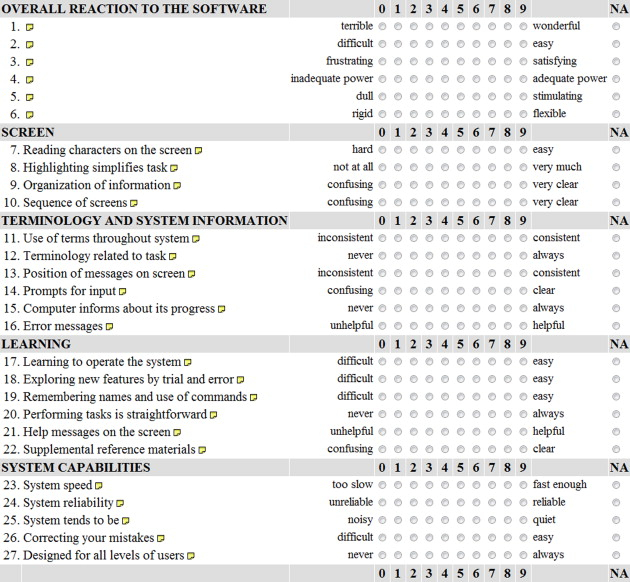

RMPP Main Learning Objectives
1. Ethical considerations during research
2. Design and proposal of research projects
Unit 1, Collaborative Discussion #1
For this assignment each student was tasked with choosing an example of unethical design practice and showing examples of ethical guidelines they violated.
In my discussion I outlined the deceptive practices of 'Dark UX Patterns' and why they are unethical.
Unit 6, Questionaire
The questionnaire I have selected to critique is one I found attached to a research report about designing a questionnaire that was developed to be used for evaluating User Interface satisfaction for software. I choose to critique it because of several problems that immediately came to my attention that I felt should have been addressed before it was published. The first questionable decision I noticed was labeling both extremes of each question. I can understand how such labeling could help someone better understand the ten point scale, but the words chosen have to be carefully considered. For example, question 23 about system speed has a score of zero as 'too slow' but a score of nine is 'fast enough'. Usually a max score indicates going above and beyond, so a score of 6 or 7 should be 'fast enough' and higher scores would indicate speeds beyond what is considered necessary for the software to be functional. There are also cases where the wording of a score is ambiguous. Question 8 asks about the highlighting functionality of the user interface, from 'not at all' to 'very much'. This scale implies that more highlighting is better, but if the software did nothing but highlight all text that should correspond to a low score, not a high score. A better wording would be something like 'strongly disagree' to 'strongly agree' depending on how the user felt the highlighting helped or hindered their use of the software. Despite these problems, there are several aspects of the questionnaire that are well developed. Having the scale present above and below every section makes it much easier for participants to select the correct score at every line without having to go all the way back to the top from the bottom of the page. Clear headings help participants know the context of each question, allowing for more accurate responses. Having the option of no opinion for each question eliminates the problem of random answers when a user isn't sure how to answer or if they don't understand what the question is asking. Overall I think the questionnaire is well made, and with a small amount of reworking would be even better.
Unit 7, Collaborative Discussion 2
For this assignment we responded to a hypothetical ethical dilemma. Should a researcher use creative analysis of their data to show a more favorable outcome of their research, or should they admit the results of the research aren't positive and risk their client trying to bury the conclusions?
While there were many different methods and arguments used, almost everyone came to the same conclusion. The research report should include all relevant data, and any possible conclusions that data leads to, no matter how positive or negative they may be. Any problems that come up afterwards on the part of the client disparaging the study because they dislike the outcome can be handled after.
This conclusion may seem obvious, but it's important to brainstorm about specifics of how to handle it for if and when it does occur in real life. Having relevant information to look back on and knowing how to move forward makes dealing with these ethical problems much easier.
Unit 8 and 9, Statistics Worksheet
8.1
The sample size for Diet B is the same as for Diet A, 50. The mean weight loss for Diet B is 3.808, which is a little lower than the mean weight loss for Diet A. The standard deviation is 2.722, which is almost identical to the standard deviation of Diet A. This quick analysis seems to indicate that Diet A is overall more effective than Diet B.
8.2
The median weight loss for Diet B was 3.84. The first quartile is 2.158, and the third quartile is 5.542. This gives an IQR of 3.384. The median weight loss for Diet A is larger than the median weight loss for Diet B. The IQR of the two diets is close to equal. This seems to suggest that both diets are effective, but once again points towards Diet A being more effective than Diet B.
8.3
For Area 2 respondents, 21.11% prefer A, 33.33% prefer B, and 45.56% prefer something else. Compared to Area 1, less people responded Other. However, the ratio of people who responded A to people who responded B is almost equal, 64.706% in Area 1 and 63.333% in Area 2. This would seem to indicate that both areas have similar taste in cereal.
8.4
From the chart, we can see that for most batches Agent1 has a lower level of impurities measured than Agent2. Running a two-tailed test confirms this observation, as the observed mean difference of Agent1 is -0.433, meaning Agent1 has less impurities on average than Agent2. The two-tailed p-value was calculated to be 0.008, so it is significant at the 5% level.
8.5
Analyzing the data collected with a one-tailed test gives a t stat of -3.264, meaning Agent1 leads to a lower amount of impurities than Agent2. The conclusion is the same as with the two-tailed test.
8.6
A quick analysis of the two data sets shows that the mean income for Males is 52.9 and the mean income for females is 44.2. This is a significant difference. The F ratio is 1.226 and the P two-tail value is 0.436, meaning the F ratio is not significant and the variances of the two data sets are roughly equal. A two-tailed t test with equal variances gives us a value of 0.00142. This value means the observed t is significant. This confirms our initial hypothesis that the mean Male pay is higher than the mean Female pay. The biggest assumption of this analysis is that the average Male position is equivalent to the average Female position. It is possible that the Male data set has a higher percentage of managers, for example. This would lead to a higher mean pay for Males even though pay is equal for Males and Females at equivalent paygrades.
RMPP Major Deliverables
Literature Review
For the literature review I was tasked with choosing a topic from a list of approved topics, then critically evaluating that topic by reading existing literature on the subject.
Main objectives
1. Provide an overview of current knowledge
2. Demonstrate awareness
3. Highlight similar and contrasting views
The topic I chose to cover for my literature review was AI and machine learning in the field of assisting the physically disabled. I went over the history of AI and machine learning, the basics of how it works, and how it can be used to help those who are disabled. Many studies and research projects have already been performed on the topic, but there is a lot more room for the field to grow and improve.
Research Proposal Presentation
For this deliverable I was required to pick a topic and propose a research project to expand on that topic. This proposal would be delivered as a presentation and needed a visual component and an audio recording to accompany it.
Main Objectives
1. Knowledge of the topic and use of relevant sources
2. Critical analysis of the topic
3. Well-structured proposal
4. Competently executed presentation
My topic of choice again involved AI and machine learning, but applied to the field of Cybersecurity. I proposed that the addition of machine learning could enhance the security and reliability of traditional biometric scanners. My research project would test this hypothesis by both modifying an existing biometric scanner with AI and by making a new software to track eye movement with machine learning.
RMPP Individual Reflection
This module focused on several important topics that are important to cybersecurity. These topics include research methods, ethical considerations and codes of conduct, data analysis, and legal issues. Focusing on ethics and legal issues is important because they factor into almost everything that happens in a professional setting, and too many people take a hands-off approach to it, assuming that it’s someone else’s job to inform them about any potential problems. By focusing on these issues it stimulates an unconscious process to always be thinking about potential ethical or legal conflicts and bring them to attention when necessary. Research is another important area for almost any professional. It’s impossible to learn everything you need to know before starting a job, and the ability to identify when your knowledge of a topic is lacking and how to gain that knowledge through asking colleagues and independent research is invaluable.
The literature review was the first major deliverable of the module. The focus of the paper was teaching how to research a specific topic and critically evaluate and discuss the information found. The topic I chose to focus on was AI and machine learning helping the physically disabled. The majority of my research was done by reading research papers and textbooks found online. I outlined a brief history of AI and machine learning and the basics of how they function and are implemented. I then went over several different ways machine learning was being used to improve the quality of life of the physically disabled. There are several complications to the use of machine learning in the medical field, so I discussed them next. This includes ethical considerations and complications due to the inherent drawbacks of deep learning AI. I believe the field of AI and machine learning has a lot of potential for helping advance a lot of fields of study, and assisting those who need medical help is very important.
The next major deliverable was the research project proposal. The learning objectives of this presentation were researching a topic, compiling that research into a plan for a research project, and then presenting that plan in a clear and interesting way. I chose a topic related to the subject of my literature review, AI and machine learning, but applied it to the field of cybersecurity. I proposed adding machine learning to traditional methods of biometric security standards with the hypothesis that the addition of deep learning could help improve the security and usability of biometric scans. In my presentation I started with the history of biometrics and how they were incorporated into security and cybersecurity applications. I then outlined how the research project would add machine learning to an existing biometric system and then test that system to see if it had improved. I also referenced some research already completed that showed the concept had promise in increasing security and reliability. I also talked about a new idea to use machine learning in a new type of cybersecurity software that monitored eye movement and keyboard use to identify unauthorized users. Next I presented a timeline of the research project from the recording of data to training of machine learning algorithms to testing and refinement and gathering of results. Another critical part of the research proposal were ethical considerations. Due to the sensitive nature of recording biometric data of research participants, ethical codes of conduct and privacy laws need to be closely followed during every step of the research project.
It took me a lot of deliberation to decide on a topic for the research proposal. Choosing a topic for big projects has always been difficult for me because I start second guessing my ideas and if they will have enough content to fill a large project. I’m glad that I chose the topic that I did because it was very interesting to look at the existing research, and both parts of the topic (machine learning and cybersecurity) are areas that I think are full of potential for future research and improvement. The other difficult part of the project was recording the presentation. Oral speaking has always been something I struggle with. Having the ability to go back and re-record slides that I messed up on made it a lot easier than a live presentation, but it’s still something that I need to practice more.
Overall this was an interesting and informative module. When I learned about ethics in my undergraduate studies it was usually in a separate humanities course. Learning about ethics alongside technical aspects leads to a better understanding of them. I also appreciate more practice writing and presenting a proposal because it involves several things I’m weak at, so the more I’m required to do it the better I can become.